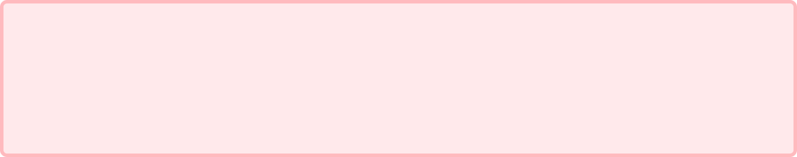
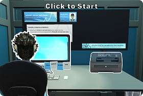
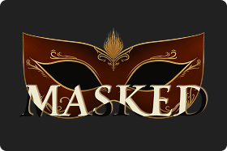
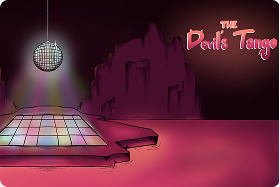

Moral Optics
A satirical game based on 9-5 jobs and modern day corporations. I was the lead UX/UI designer and developer, creating and ideating on all UI systems and running weekly UX reviews the entire game from start to finish, focusing on minigame systems and gaining player interest early on.

Masked
Based on the commedia dell'arte and traditional Venetian masks, this detective game focuses on inspiring player curiosity through visually hiding options from the player. I solo designed the UI and worked through various UX problems, like readability and handling player frustration.

The Devil's Tango
Based on selling out and trying to save your reputation as a passionate dancer to an incredibly unexpected fan. For this game I was the lead UI designer and worked though layout design challenges, focusing on balancing player attention and overall mechanic cohesion.